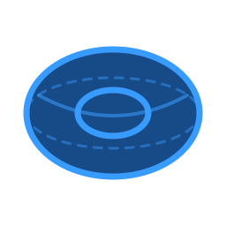
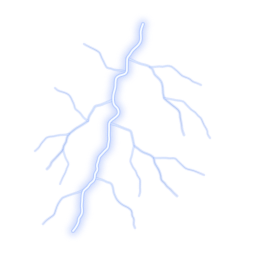

Outliner
Outliner
Fracture · 0 fragments
Released
0
Held
0
Ctrl+F
All
All fragments
Released
Held
Hidden
Rejoined at seams
Viewport
Fracture Editor

Torus
0 fragments
EDIT
Edit
Sim
Play
Simulate
Shift+2

Material
Material
Energy · blue → red
Cells
Normals
Explode
0 %
Energy
LOG
0 J
0 J
Drag to orbit · right-drag to pan · wheel to zoom · click a fragment to select
Diagnostics
LIVE
Debug view
Pause samples
Primitive library
Analytical shapes · exact distance fields · closed-form volume
0.00
/ 4.00 s
EDIT · NOT BAKED
Timeline bakes when you simulate ·
Shift+2
or
Space
to play
Kinetic
0 J
0 moving
¼×
½×
1×
2×
Primitive Library
Inspector